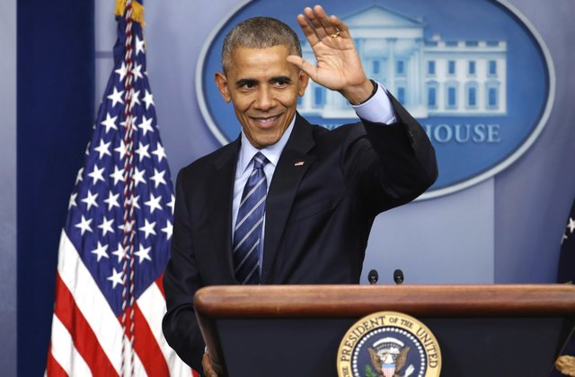

Barack Obama, the 44th President of the United States waving after giving an inpsiring speech at the White House.
A timeline of Barack Obama's life (so far):
- 1961 - Born in Honolulu, Hawaii
- 1967 - Barack and his mother moved to Jakarta, Indonesia
- 1971 - Barack returned to Hawaii and grew up to graduate from a presitgious private school.
- 1981 - Barack made his first speech, protesting the Apartheid at Occidental College. It was said that he struggled with his sense of identity being of a mixed racial history. He yearned to understand what it was like to be a black man in the United States.
- 1983 - Barack graduated Magna Cum Laude from Columbia University with a Bachelor of Arts Degree. For the next few years he would become a neighborhood organizer in the city of Chicago, seeking to help those less privileged to recieve the help they need.
- 1988 - Barack attended Harvard University's law school and worked as an intern in a law firm in Chicago where he would meet his now wife Michelle Obama.
- 1990 - On February 5th, 1990, Barack Obama became the first black president of the Harvard Law Review.
- 1991 - Obama graduated from Harvard with his law degree and began work on his book Dreams of My Father.
- 1996 - After teaching at the Chicago School of Law and working as a community organizer for struggling neighborhoods in Chicago, Barack was elected to the Illinois State Senate.
- 2002 - After running for a position on the US Senate and losing, as well as having two daughters (Sasha and Malia), Obama began to campaign for the U.S. Senate.
- 2004 - On July 7, Obama was asked to give a keynote speech at the Democratic National Convention. On November 2, he was elected to the United States Senate.
- 2005 - Obama was sworn in as a U.S. Senator
- 2007 - Obama announced his candidacy to become President.
- 2008 - Barack Obama became the first minority President in the United States of America.
- 2009 - Barack Obama became sworn in as President and won the Nobel Peace Prize.
- 2010 - On January 27, Obama gave his first State of the Union address.
- 2012 - On January 27, Obama became re-elected as President.
- 2015 - On January 27, Obama passes same-sex marriage as a American right.
- Now - Barack continues to voice his influence on key issues and has a Netflix deal to create documentaries about important issues that he views and about his Presidency.
If you have time, you should read more about Obama's amazing life on his Wikipedia Site.